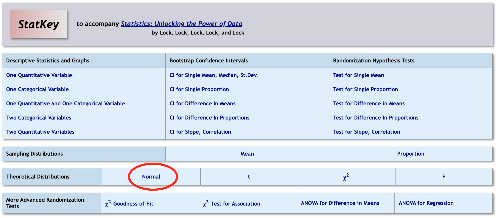
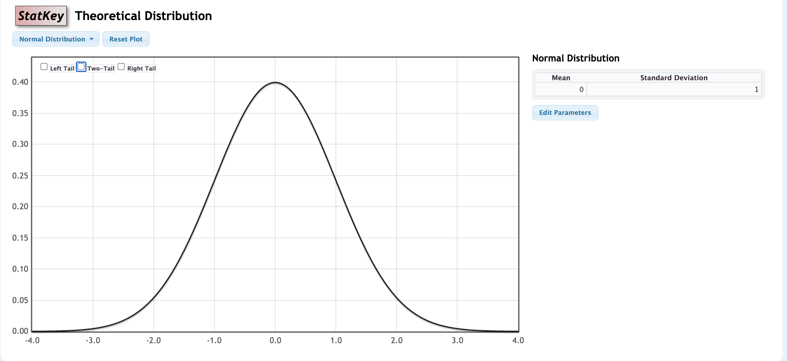

In Chapters 3 and 4 you used StatKey to build randomization distributions for a proportion.
If the randomization distribution is bell-shaped, we can skip the simulation.
Step 1. Standardize: how many standard errors is the sample statistic from the null value?
\[ z=\frac{\text{Sample statistic}-\text{Null parameter}}{\text{SE}} \]
Step 2. Find the \(p\)-value: the area beyond \(z\) under the standard normal curve (mean 0, standard deviation 1).
Use StatKey to find areas and endpoints of intervals:

Use StatKey to find areas and endpoints of intervals:

A 2023 Pew Research Center probability-based survey of 1,627 U.S. adults found that only 25% said it is extremely or very important to have a four-year college degree to get a well-paying job. Does this provide evidence that fewer than 30% of all U.S. adults hold this view? The standard error assuming \(H_0\) is true is SE = 0.011.
(a) What are the null and alternative hypotheses?
(b) What is the standardized test statistic?
Recall: \(H_0: p=0.30\), \(H_a: p<0.30\), \(\hat{p}=0.25\), SE = 0.011.
(c) Use the standard normal distribution to find the \(p\)-value. Sketch it.
(d) What is the conclusion of the test, in context?
A normal distribution has a symmetric, single-peaked, and bell-shaped density curve.
Completely characterized by its mean \(\mu\) and standard deviation \(\sigma\)
Centered at mean \(\mu\)
Inflection points at \(\mu-\sigma\) and \(\mu+\sigma\)
Notation: \(X\) has a Normal distribution with mean \(\mu\) and standard deviation \(\sigma\)
\[ X\sim N(\mu,\sigma) \]
The standard normal \((Z)\) distribution has
Mean \(\mu=0\)
Standard deviation \(\sigma=1\)
Every normal distribution can be standardized to follow a standard normal distribution.
\[ Z=\frac{X-\mu}{\sigma} \]
For random samples with a sufficiently large sample size, the distribution of sample statistics for a mean or a proportion is approximately normal.
Holds for any original distribution, although “sufficiently large” varies: the more skewed the original distribution, the larger \(n\) must be.
Quantitative variables that are not very skewed: \(n\ge 30\) is usually sufficient.
Categorical variables: counts of at least 10 in each category are usually sufficient.
Turn and talk (30 sec): A sample proportion is \(\hat{p}=0.52\) from \(n=1000\) when \(p=0.5\). Do the CLT conditions hold? How do you know?
If the randomization distribution is normal, it is centered at the null value with spread equal to the SE:
\[ N(\text{null value}, \text{SE}) \]
So a \(p\)-value is the area in the appropriate tail(s) beyond the observed statistic.
Standardizing (\(z\)) turns this into the same question for every test: the area beyond \(z\) under the standard normal curve.
Test \(H_0: p=0.5\) vs \(H_a: p>0.5\) using a sample proportion of 520 out of 1000, or \(\hat{p}=0.52\).
Randomization distribution (StatKey): Test for a Single Proportion → Edit Data → sample size 1000, count 520, null proportion 0.5 → generate at least 5000 samples → right tail.
(a) Standard error from the randomization distribution: __________
(b) Randomization \(p\)-value: __________
(c) Model the randomization distribution with a normal distribution with mean 0.5 and standard deviation equal to this SE. Find the area to the right of 0.52. Sketch it.
Recall: \(H_0: p=0.5\), \(H_a: p>0.5\), \(\hat{p}=0.52\), \(n=1000\).
(d) Find the standardized test statistic \(z\). Then find the \(p\)-value from the standard normal distribution.
(e) Compare the three \(p\)-values.
| Method | \(p\)-value | |
|---|---|---|
| 1 | Randomization distribution | |
| 2 | \(N(0.5,\text{SE})\) area | |
| 3 | Standard normal \(Z\) area |
What do you notice, and why?
According to the U.S. Census Bureau’s Current Population Survey (2024), 47% of U.S. women ages 25 to 34 have a bachelor’s degree, compared with 37% of men in the same age group. Is this gap statistically significant? Assume the standard error for the difference in proportions under \(H_0\) is SE = 0.03.
(a) What are the null and alternative hypotheses? (Let \(p_W\) and \(p_M\) be the population proportions with a bachelor’s degree.)
(b) What is the standardized test statistic?
Recall: \(H_0: p_W-p_M=0\), \(H_a: p_W-p_M\neq 0\), difference = 0.10, SE = 0.03.
(c) Use the standard normal distribution to find the \(p\)-value. Sketch it.
(d) What is the conclusion of the test, in context?
\[ z=\frac{\text{Sample statistic}-\text{Null parameter}}{\text{SE}} \]